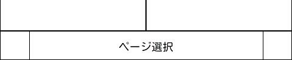
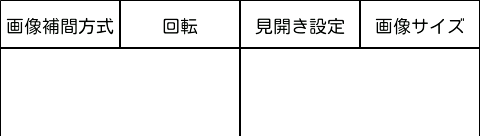

テキスト表示画面の説明
操作方法
画像のスクロール
画像が画面からはみ出して表示されている場合、画面上端のメニューと下端のページ選択を除く部分をスワイプすることでスクロールします。
前ページ／次ページへの遷移
画面の上端／下端を除く部分の左側のタップで前ページ、右側のタップで次ページに移動します。
メニューから呼び出す「共通の表示画面」の設定で「次ページ/前ページ操作の入替」を有効にした場合は逆の操作になります。
また、メニューから「操作変更」を選択して一時的に入れ替えることも可能です。
ページ選択
画面の下端をスワイプすることでページを選択できます。
ページ選択中は画面上部に現在のページやファイル名等が表示されます。
左端のタッチで先頭ページ、右端のタッチで最終ページに移動します。

任意の表示倍率での表示
画面の上端／下端を除く部分でピンチイン／ピンチアウトを行うと任意の倍率で表示できます。
元の倍率に戻したい場合は画面上部の「画像サイズ」を選択してください。
一時的な画面設定の変更
画面上端が表示設定を呼び出すメニューとなっています。
タッチすると設定の名称が表示されますので設定する項目を選択してください。

画像補間方式
テキスト表示では無効です。
回転
テキスト表示では無効です。
見開き設定
見開きページをどのように表示するかを選択します。
- 見開き表示
２ページを並べて表示します。
- 単ページ表示
１ページずつ表示します。
- 連続表示
全ページを並べて表示します。
スクロールで続けて読んでいくことができます。
画像サイズ
ページを表示する際のサイズを選択します。
- 元のサイズで表示
用紙サイズのまま表示します。
- 幅に合わせて表示
用紙の縦横比のまま画面の幅に拡大／縮小して表示します。
- 高さに合わせて表示
用紙の縦横比のまま画面の高さに拡大／縮小して表示します。
- 全体を表示
用紙の縦横比のまま画面からはみ出さないように拡大／縮小して表示します。
音操作
ページのスクロール
端末のマイクに特定の音のパターンを聞かせることでページめくりとスクロールの操作ができます。
マイクに息を吹きかけたり、舌を鳴らすなどで操作できます。
思いつきで付けた機能なので実用性についてはお察しください。
- 短い音（息の場合はフッ）
次ページへ移動。
- 短い音＋短い音（息の場合はフッフッ）
前ページへ移動。
- 長い音（息の場合はフー）
音が続いている間、次ページの方向へスクロール。
- 短音＋長い音（息の場合はフッフー）
音が続いている間、前ページの方向へスクロール。